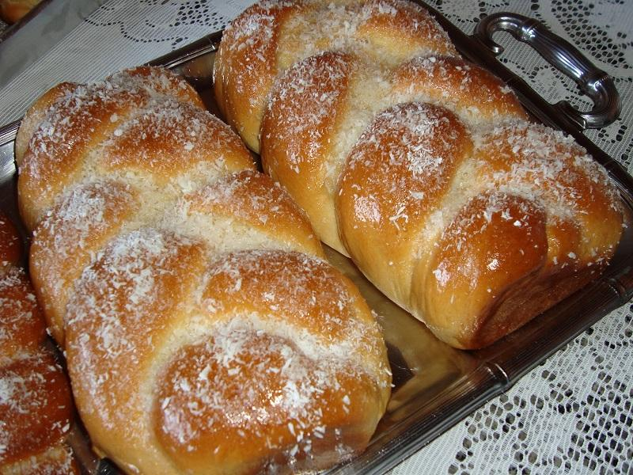

Rosca Doce e Fofinha

Ingrediente
Massa:
- 25g de fermento em pó;
- 2 ovos;
- 1 xícara de chá de açúcar;
- 1/2 xícara de óleo;
- 1/2 colher de sal;
- 1 xícara de leite;
- 1/2 xícara de água;
- 1 kg de farinha de trigo.
Cobertura:
- 1/2 xícara de leite;
- 1/2 xícara de açúcar.